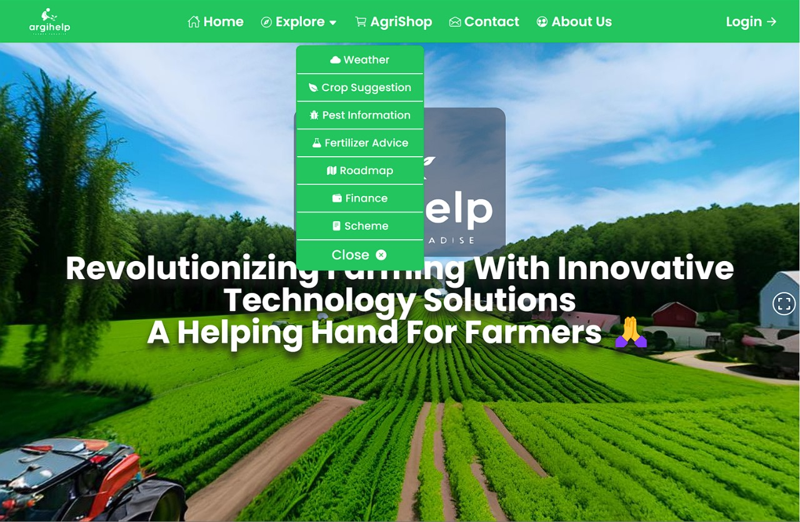

Welcome to AGRIHELP, your go-to platform for agricultural solutions. Our web application combines the power of technology with ancient agricultural practices, allowing farmers and agricultural businesses to thrive today.

About The Features
Uninterrupted business at your fingertips We introduce the online marketplace that is changing the way agriculture buys. Our user-friendly platform connects you directly with sellers, making the business process more efficient and profitable for farmers.
Weather Information at Your Fingertips Weather capabilities provide farmers with real-time, regional weather data for informed decision making and improving crop management. You can plan your events with confidence with accurate forecasts based on the reality of your farm
Crop recommendations for maximum yields Crop recommendations transform your farming using advanced analytics and insights gained through insight. Based on your farming experience, this feature provides personalized recommendations to improve crop selection and maximize profitability.
Pest Intelligence for Resilient Crops We offer pest intelligence capabilities to provide farmers with valuable information to manage and protect crops from threats. Stay one step ahead of pests and diseases with real-time information and actionable advice.
Increase growth with fertilizer recommendations We take the guesswork out of fertilizer application processes with our Fertilizer Recommendations feature, providing farmers with healthy nutrition recommendations. Increase yields and encourage permaculture practices through precision fertilization guidance.
Access your farm with the Roadmap feature We introduce the Roadmap feature, a great tool designed to accurately and effectively guide farmers through their farming journey. This feature provides a comprehensive guide to ensuring successful and successful farming from planning to implementation..
Make the most of government program integration. We put the power of government support directly at your fingertips through the government program. Stay informed and take advantage of farming programs and subsidies to improve your agricultural operations and increase overall profitability.
Secure Your Farm's Financial Future with Financial Aid Hub
We offer Financial Assistance, a comprehensive tool designed to help farmers access and manage financial support. Seamlessly respond to grants, loans and financial assistance to ensure economic stability and growth.